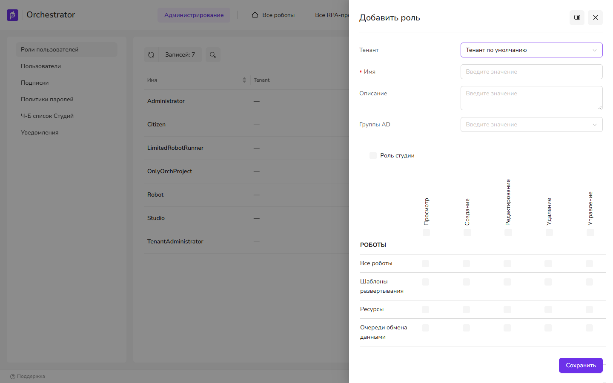

Вход и доступ
На странице описаны включение способов входа (логин и пароль Оркестратора, AD по LDAP, SSO Kerberos, Keycloak), настройка тенантов и политики паролей, ограничение входа в тенант по умолчанию. Все параметры задаются в конфигурации службы WebApi.
Файл конфигурации WebApi — appsettings.ProdLinux.json (Linux) или appsettings.ProdWin.json (Windows) в каталоге службы. В Docker параметр задаётся переменной окружения сервиса web-api в docker-compose.yml: уровни имени разделяются двойным подчёркиванием, элемент массива указывается номером — Auth__Type, Tenants__Items__0__Id, ActiveDirectory__MultyForest__<домен>__Host. После изменения перезапустите WebApi: часть параметров читается только при запуске. В Docker выполните sudo docker compose up -d — контейнер пересоздаётся с новыми переменными. Порядок чтения источников — на странице Параметры конфигурации.
Способы входа: Auth:Type
Набор способов входа на экране входа UI4 (список Другие способы входа) задаётся одним числом — суммой флагов. Например, 5 = Оркестратор + SSO.
| Флаг | Способ | Что видно на экране входа UI4 |
|---|---|---|
1 | Учётные записи Оркестратора | Логин и пароль |
2 | LDAP: логин и пароль AD | форма логина с выбором домена |
4 | Negotiate: SSO по Kerberos | Доменная учетная запись |
8 | Keycloak, упрощённый поток | Keycloak (Упрощённый поток) |
16 | Keycloak, поток с PKCE | Keycloak (PKCE) |
Значение по умолчанию — 0: ни один флаг не установлен. В Docker-образе WebApi задано Auth__Type=5.
Active Directory: секция ActiveDirectory
Каждый домен — отдельный ключ в ActiveDirectory:MultyForest. Ключ — полное имя домена: оно же сохраняется в привязках ролей и должно совпадать со значением, которое возвращает AD при входе.
Параметр (внутри MultyForest:<домен>) | Назначение | По умолчанию |
|---|---|---|
Host | Адрес контроллера домена. Порт выбирается автоматически: 389, а при UseSsl=true — 636 | — |
UseSsl | Подключаться по LDAPS | false |
AcceptUntrustedCertificate | При LDAPS принимать недоверенный сертификат | false |
ConnectionTimeout | Таймаут подключения к AD, мс | 2000 |
AdminUserName, AdminPassword | Учётная запись с правом чтения каталога. Пароль — зашифрованный (см. Безопасность) | — |
StartPoint | Корень поиска в каталоге | — |
GroupsStartPoint, UsersStartPoint | Отдельные корни поиска групп и пользователей | — |
GroupsFilter | LDAP-фильтр групп. Фильтр рекомендуется сузить: при большом числе групп возможны ошибки | (&(ObjectClass=group)) |
UserFilterTemplate | Шаблон поиска пользователя, {0} — UPN | (&(objectCategory=user)(objectClass=user)(userPrincipalName={0})) |
Tenants | Массив Id тенантов, относящихся к домену. Пустая строка — тенант по умолчанию | — |
TrustedDomains | Доверенные домены, из которых пользователь может войти | — |
AdSuffixes | Список суффиксов домена | — |
Home | Родной домен для SSO; не показывается в выпадающем списке формы входа | false |
KerberosKeytabPath | Путь к keytab-файлу для SSO (если keytab хранится в файле) | — |
Параметры уровня секции:
| Параметр | Назначение | По умолчанию | С версии |
|---|---|---|---|
ActiveDirectory:MultyTenantsGroup | Мультитенантная AD-авторизация: одна группа AD может быть привязана к ролям разных тенантов. На форме входа появляется переключатель Мультитенантная AD-авторизация и выбор тенанта | false | |
ActiveDirectory:KerberosKeytabVault | Источник keytab:0 — из Vault через клиент приложения, 1 — из переменной окружения KEYTAB_<ДОМЕН> (Base64; точки в имени домена заменяются на _, буквы — заглавные). Не задан — файл KerberosKeytabPath или S3 | не задан | 1.26.4 |
Keytab допускается хранить и в S3:FileStore:S3KerberosKeytabs:<домен>FileStore:MinioKerberosKeytabs:<домен> с полями BucketName, ObjectName (работает при FileStore:Type=1, см. Хранилища).
Группы AD привязываются к ролям в UI4: Настройки → Администрирование → Роли пользователей, в карточке роли — Группы AD.

SSO средствами IIS не поддерживается: билет Kerberos проверяется в WebApi по keytab (файл, Vault, переменная окружения или S3).
Keycloak: секция OpenId:KeyCloak
Ключ внутри секции — имя realm. Роли Keycloak привязываются к ролям Оркестратора в карточке роли, блок Роли KeyCloak.
Параметр (внутри OpenId:KeyCloak:<realm>) | Назначение | По умолчанию |
|---|---|---|
ClientId | Клиент Keycloak | orch |
ClientSecret | Секрет клиента, зашифрованный | — |
ConfigurationUrl | Если задан, AuthUrl, TokenUrl и LogoutUrl берутся из ответа этого адреса | — |
AuthUrl, TokenUrl, LogoutUrl, RedirectUrl | Адреса потока авторизации | — |
RealmRolesUrl, ClientRolesUrl, ClientsUrl, GroupsUrl, UsersUrl | Адреса Keycloak для чтения ролей realm и клиентов, клиентов, групп и пользователей | — |
KeycloakTokenRolesSource | Источник ролей в токене:0 — realm, 1 — клиент, 2 — другой клиент (RoleClientId) | 0 |
RoleClientId | Клиент, в котором находятся роли (для KeycloakTokenRolesSource=2) | — |
Roles | Жёстко заданный список ролей; если не пуст, роли берутся из него | пусто |
DisableUserCheck | Отключить проверку наличия пользователя | false |
Тенанты: секция Tenants
| Параметр | Назначение | По умолчанию |
|---|---|---|
Tenants:FromAppsettings | true — список тенантов берётся из конфига (Items); false — из БД | false (в Docker-образе True) |
Tenants:Items[] | Тенанты, кроме тенанта по умолчанию: Id, Name, TimeOffset, IncomingEmail, Agent, RpaProjectQueueProcessingType | — |
Tenants:TimeOffset | Смещение времени в часах для тенанта по умолчанию | 0 |
Tenants:Agent:Port / Https / Timeout | Параметры обращения WebApi к агенту. В Items[].Agent — отдельное значение для тенанта, что позволяет размещать на одной машине агентов разных тенантов на разных портах | 5002 / true / 1500 мс (в Docker-образе Timeout — 2000) |
Tenants:IncomingEmail | Ящик для почтовых триггеров, см. Почта и оповещения | — |
Tenants:DisabledDefaultTenant | Запретить вход в тенант по умолчанию | false |
Стратегия очереди проектов для тенанта — см. Очередь проектов.
Политика паролей и блокировка
Политика задаётся в конфиге или в UI4: Настройки → Администрирование → Политики паролей (вкладка видна только администратору). Если в конфиге есть секция Security:Password, действует она, а значения из UI не применяются.
| Параметр | Назначение | По умолчанию |
|---|---|---|
Security:Password:RequiredLength | Минимальная длина | 6 |
Security:Password:RequiredUniqueChars | Минимум уникальных символов | 1 |
Security:Password:RequireDigit / RequireLowercase / RequireUppercase / RequireNonAlphanumeric | Обязательные цифры, строчные, заглавные, спецсимволы | true |
Security:Password:MaxOldPasswords | Сколько прошлых паролей нельзя повторять | 4 |
Security:Lockout:MaxFailedAccessAttempts | Неудачных попыток до временной блокировки | 5 |
Security:Lockout:DefaultLockoutTimeSpan | Длительность блокировки (формат чч:мм:сс) | 00:05:00 |
Security:Jwt:SessionLifetimeMin | Время жизни сессии (токена), минуты | значения по умолчанию нет (0); в Docker-образе 720 |
Security:Jwt:SessionLifetimeMin читается без значения по умолчанию. Задайте его явно, иначе срок сессии будет нулевым.
Отключение тенанта по умолчанию
При отключённом тенанте по умолчанию любой вход без указания тенанта (логин и пароль, AD, Keycloak) отклоняется. Порядок шагов важен: доступ к системным настройкам должен быть выдан группе AD до отключения тенанта и блокировки admin.
- Привяжите отдельную группу AD к встроенной роли администратора: Настройки → Администрирование → Роли пользователей, в карточке роли — Группы AD. Пользователь из этой группы входит в Оркестратор с ролью администратора.
- Задайте в конфигурации WebApi
Tenants:DisabledDefaultTenant=true(в Docker —Tenants__DisabledDefaultTenant=True) и перезапустите WebApi. Вход без указания тенанта отклоняется; в журнале службы WebApi — предупреждение о попытке входа в отключённый тенант. - Если требуется, заблокируйте встроенные учётные записи
admin,studioиsuperadmin: установите полеDisabledв таблицеUsersБДltoolsidentity. Экрана для этого в UI4 нет; запрос выполняется на сервере БД под учётной записью с правом изменения таблицы.
Вход подUPDATE "Users" SET "Disabled" = true WHERE "Id" IN ('a18be9c0-aa65-4af8-bd17-00bd9344e575', -- admin 'a18be9c0-aa67-4af8-bd17-00bd9344e575', -- studio '00000000-0000-0000-0000-100000000000'); -- superadminadminотклоняется.
Ограничение версии Студии: секция StudioVersionChecker
| Параметр | Назначение | По умолчанию |
|---|---|---|
MinimumStudioVersion | Минимальная версия Студии, например 1.26.9.0. Пусто — без ограничения | пусто |
StudioVersionExceptionBehaviorType | Поведение Студии, если версия ниже: 0 — закрывается без сообщения, 1 — закрывается с сообщением, 2 — только сообщение | 0 (в Docker-образе 1) |
Пример
Фрагмент файла конфигурации WebApi: вход по логину и паролю Оркестратора, по LDAP и SSO (1 + 2 + 4 = 7), один домен, один дополнительный тенант. Секции добавляются к имеющимся в файле.
{
"Auth": { "Type": 7 },
"ActiveDirectory": {
"MultyTenantsGroup": false,
"MultyForest": {
"corp.example.local": {
"Host": "dc01.corp.example.local",
"UseSsl": true,
"AdminUserName": "svc-orch@corp.example.local",
"AdminPassword": "<зашифрованный пароль>",
"StartPoint": "DC=corp,DC=example,DC=local",
"GroupsFilter": "(&(ObjectClass=group)(cn=primo*))",
"Tenants": [ "" ],
"KerberosKeytabPath": "/etc/primo/orch.keytab"
}
}
},
"Tenants": {
"FromAppsettings": true,
"DisabledDefaultTenant": false,
"Agent": { "Port": 5002, "Https": true, "Timeout": 1500 },
"Items": [ { "Id": "BUCH", "Name": "Бухгалтерия", "TimeOffset": 3 } ]
},
"Security": {
"Jwt": { "SessionLifetimeMin": 720 },
"Password": { "RequiredLength": 8, "MaxOldPasswords": 7 },
"Lockout": { "MaxFailedAccessAttempts": 5, "DefaultLockoutTimeSpan": "00:05:00" }
}
}Те же параметры в Docker — переменные окружения сервиса web-api, например:
Auth__Type: 7
ActiveDirectory__MultyForest__corp.example.local__Host: dc01.corp.example.local
ActiveDirectory__MultyForest__corp.example.local__Tenants__0: ""
Tenants__Items__0__Id: BUCH
Security__Jwt__SessionLifetimeMin: 720Как проверить
- Перезапустите WebApi. Служба запущена,
/healthотвечаетHealthy. - Откройте в браузере
https://<адрес Оркестратора>/api/Account/type. Ответ — число изAuth:Type. - Откройте экран входа UI4. В списке Другие способы входа есть только те способы, флаги которых включены.
- Войдите доменной учётной записью из группы, привязанной к роли. Вход успешен, в карточке пользователя видна роль. Ошибка «Ошибка аутентификации в AD …» — проверьте
Host, учётную запись иStartPoint. - При
MultyTenantsGroup=trueоткройте/api/Account/MultyTenantsGroup. Ответtrue, на форме входа есть выбор тенанта.